Essential Grammatical Elements of ggplot2
normalct
2018-03-18
Link to the ggplot2 tutorial: Grammar of graphics
0.0.1 Grammar of graphics
- Building blocks
- For solid, creative, meaningful visualizations
| Element | Description |
|---|---|
| Data | The data being plotted. |
| Aesthetics | The scales onto which we map our data. |
| Geometrics | The visual elements used for our data. |
| Facets | Plotting small elements. |
| Statistics | Representation of our data to aid understanding. |
| Coordinates | The space on which the data will be plotted. |
| Themes | All non-data ink. |
0.0.2 Diagram
| Data | {variables of interest} | |||
|---|---|---|---|---|
| Aesthetics | x-axis | colour | size | alpha |
| . | y-axis | fill | labels | shape |
| Geometries | point | line | histogram | bar |
| Facets | columns | rows | ||
| Statistics | binning | smoothing | descriptive | inferential |
| Coordinates | cartesian | fixed | polar | limits |
| Themes | non-data ink |
0.0.3 ggplot2 Layers
0.0.3.1 1. Data
Obviously, the first layer is data. Example data: Iris dataset - by Edgar Anderson, popularized by R.A. Fisher. - 3 species of irises: setosa, versicolor, virginica. - 4 measurements were made: sepal length and width, petal length and width.
head(iris)## Sepal.Length Sepal.Width Petal.Length Petal.Width Species
## 1 5.1 3.5 1.4 0.2 Setosa
## 2 4.9 3.0 1.4 0.2 Setosa
## 3 4.7 3.2 1.3 0.2 Setosa
## 4 4.6 3.1 1.5 0.2 Setosa
## 5 5.0 3.6 1.4 0.2 Setosa
## 6 5.4 3.9 1.7 0.4 Setosa0.0.3.2 2. Aesthetics
Second layer is Aesthetics which tells us which scale we shall map our data onto. This is the second main component of the grammar of graphics comes into play. On top of the grammatical elements, it’s here that we establish our static mappings.
In this Iris example, we are going to make a statterplot, so we’re going to map the Sepal.Length to the x aesthetic, and Sepal.Width to the y aesthetic.
| Species | Sepal.Length | Sepal.Width | Petal.Length | Petal.Width |
|---|---|---|---|---|
| . | X | Y |
0.0.3.3 3. Geometries
The third layer allows us to choose geometry. That means, how the plot will look.
After we’ve established our three essential layers, we have enough instructions to make a basic scatterplot.
library(ggplot2)
library(dplyr)
iris %>%
ggplot( aes(x = Sepal.Length, y = Sepal.Width) ) +
geom_jitter(alpha = 0.6)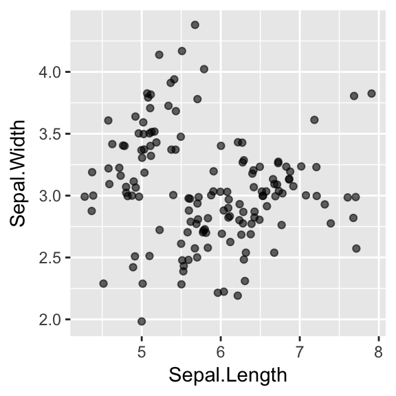
It’s pretty rough. To get a more meaningful and cleaner visualization, we’ll have to use other layers.
0.0.3.4 4. Facets
The next layer we’ll use is the Facets, which dictates how to split up our plot. In this case, we want to make three separate plots, one for each of the three species under consideration.
iris %>%
ggplot( aes(x = Sepal.Length, y = Sepal.Width) ) +
geom_jitter(alpha = 0.6) +
facet_grid(. ~ Species)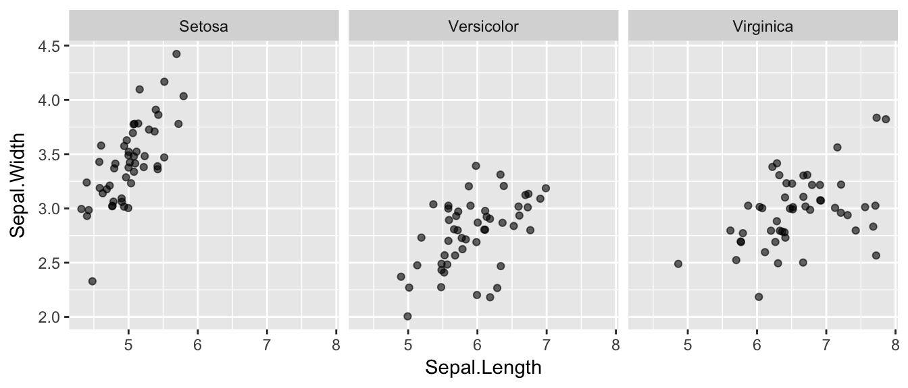
0.0.3.5 5. Statistics
The Statistics layer can be used to calculate and add many different parameters. For example, here we’ve chosen to add a linear model to each of the three subplots.
iris %>%
ggplot( aes(x = Sepal.Length, y = Sepal.Width) ) +
geom_jitter(alpha = 0.6) +
facet_grid(. ~ Species) +
stat_smooth(method = "lm", se = F, col = "red" )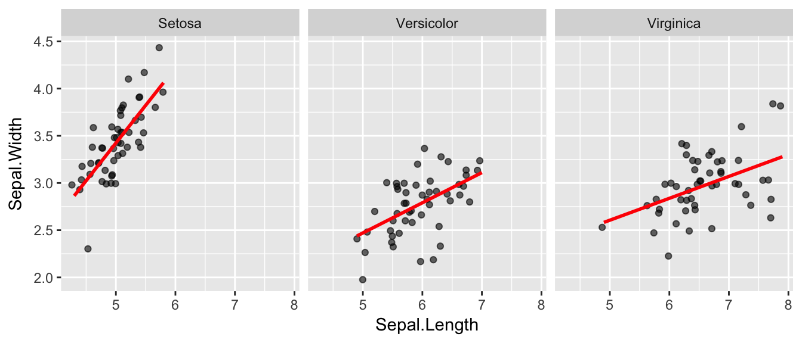
0.0.3.6 6. Coordinates
Next comes the Coordinates layer which allows us to specify the precise dimensions of the plot. Here, we’ve also cleaned up the labeling and the scaling of both the x and y axes.
levels(iris$Species) <- c("Setosa", "Versicolor", "Virginica")
iris %>%
ggplot( aes(x = Sepal.Length, y = Sepal.Width) ) +
geom_jitter(alpha = 0.6) +
facet_grid(. ~ Species) +
stat_smooth(method = "lm", se = F, col = "red" ) +
scale_y_continuous("Sepal Width (cm)",
limits = c(2,5),
expand = c(0,0)) +
scale_x_continuous("Sepal Length (cm)",
limits = c(4,8),
expand = c(0,0)) +
coord_equal()## Warning: Removed 1 rows containing missing values (geom_point).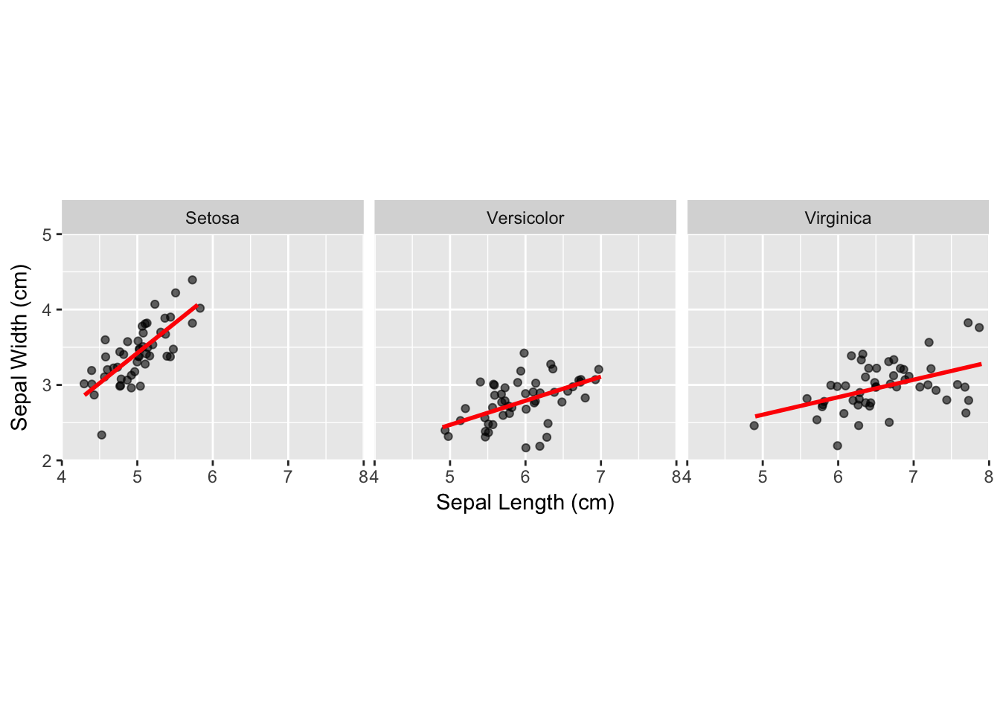
0.0.3.7 7. Theme
Finally, the Theme layer controls all the non-data ink on our plot, which allows us to get a nice-looking and meaningful and publication-quality plot directly in arm.
levels(iris$Species) <- c("Setosa", "Versicolor", "Virginica")
library(grid)
iris %>%
ggplot( aes(x = Sepal.Length, y = Sepal.Width) ) +
geom_jitter(alpha = 0.6) +
facet_grid(. ~ Species) +
stat_smooth(method = "lm", se = F, col = "red" ) +
scale_y_continuous("Sepal Width (cm)",
limits = c(2,5),
expand = c(0,0)) +
scale_x_continuous("Sepal Length (cm)",
limits = c(4,8),
expand = c(0,0)) +
coord_equal() +
theme(panel.background = element_blank(),
plot.background = element_blank(),
legend.background = element_blank(),
legend.key = element_blank(),
strip.background = element_blank(),
axis.text = element_text(colour="black"),
axis.ticks = element_line(color = "black"),
panel.grid.major = element_blank(),
panel.grid.minor = element_blank(),
axis.line = element_line(colour = "black"),
strip.text = element_blank(),
panel.spacing= unit(1, "lines")
)## Warning: Removed 1 rows containing missing values (geom_point).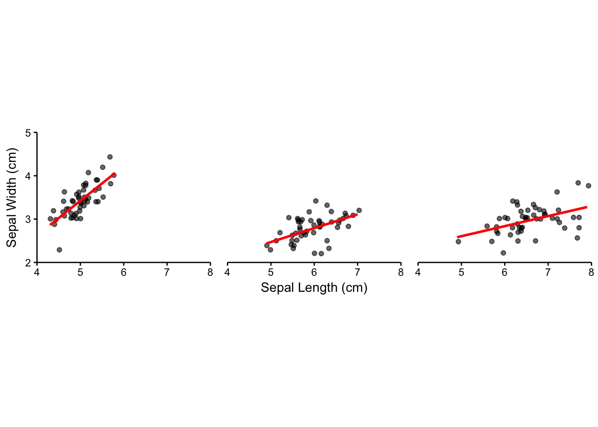
0.0.3.8 DataCamp Youtube Link
0.0.4 Introduction to ggplot2
library(MASS)
library(ggplot2)
library(dplyr)
### mammal data ###
# head(mammals)# first attempt to plot
mammals %>%
ggplot( aes(x=body, y=brain)) +
geom_point() +
stat_smooth(method = "lm", col = "red", se = FALSE)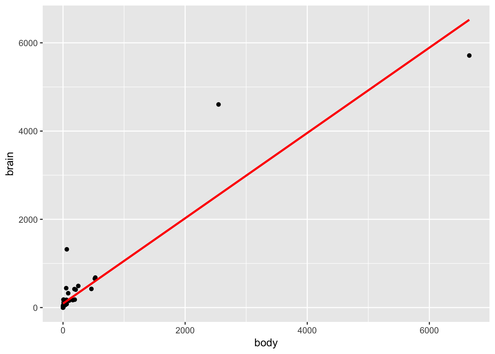
# fine tuning:
# The above plot shows that there are two points that might be
# outliers that excerts huge influence.
# We might need to use the log transformation
mammals %>%
ggplot(aes(x=body, y=brain)) +
annotation_logticks() +
geom_point(alpha=0.6) +
scale_x_log10() +
scale_y_log10() +
stat_smooth(method = "lm", col = "#C42126", se = TRUE, size=1)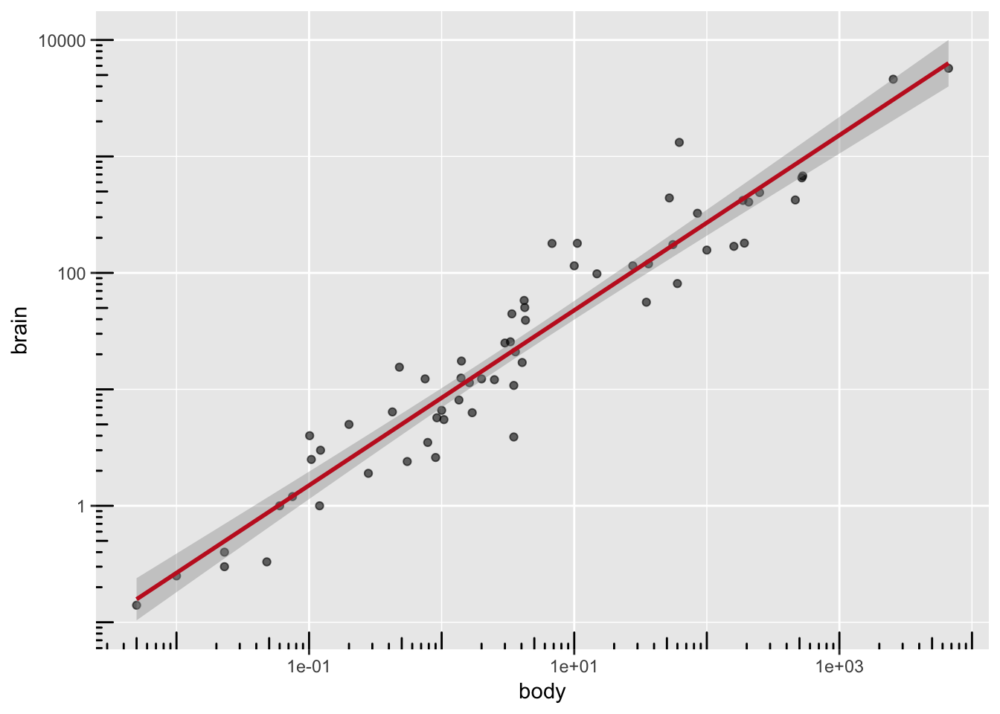
# Further fine tuning
mammals %>%
ggplot( aes(x=body, y=brain) ) +
annotation_logticks() +
geom_point(alpha=0.6) +
coord_fixed(xlim = c(10^-3, 10^4), ylim = c(10^-1, 10^4)) +
scale_x_log10( expression("Body weight (log"["10"]*"(Kg))",
breaks = trans_breaks("log10", function(x) 10^x),
labels = trans_format("log10", math_format(10^.x)) )) +
scale_y_log10( expression("Brain weight (log"["10"]*"(Kg))",
breaks = trans_breaks("log10", function(y) 10^x),
labels = trans_format("log10", math_format(10^.x)) )
) +
# stat_smooth(method = "lm", col = "#C42126", se = TRUE, size=1)
stat_smooth(method = "lm", col = "#C42126", se = TRUE, size=1) +
theme_classic()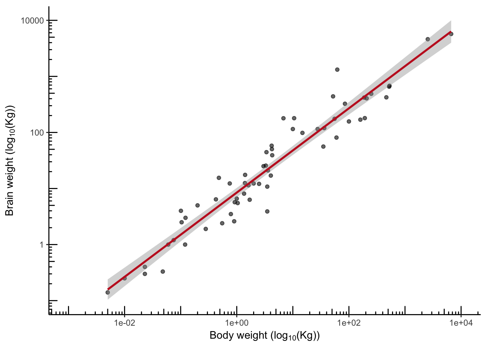
### Anscombe data ###
# head(anscombe)
anscombe %>%
ggplot(aes(x=x1, y=y1)) +
geom_point() +
stat_smooth(method = "lm", col = "red", se = FALSE)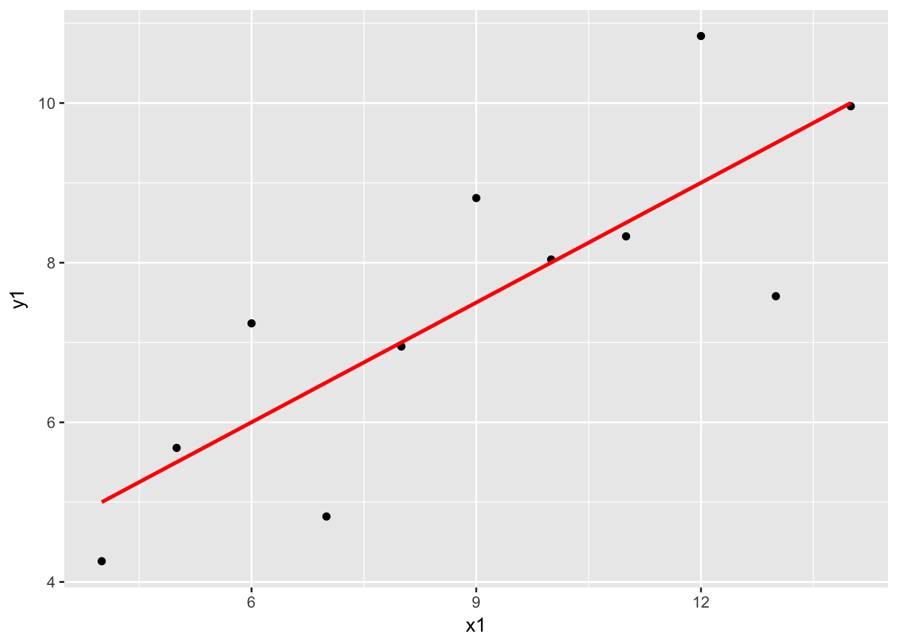
anscombe %>%
ggplot(aes(x=x2, y=y2)) +
geom_point() +
stat_smooth(method = "lm", col = "red", se = FALSE)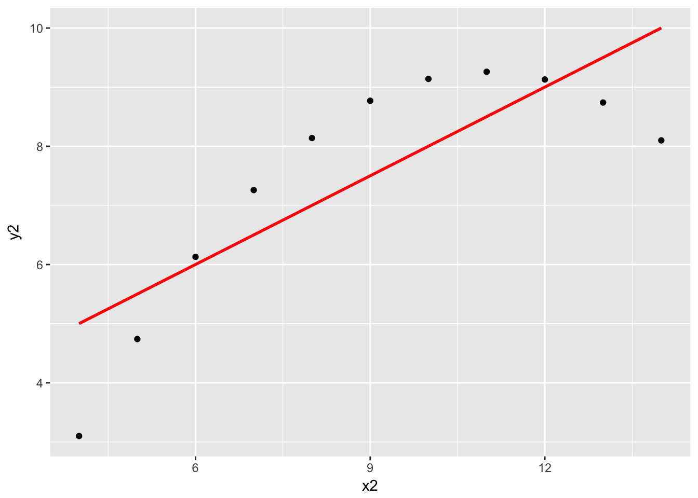
anscombe %>%
ggplot(aes(x=x3, y=y3)) +
geom_point() +
stat_smooth(method = "lm", col = "red", se = FALSE)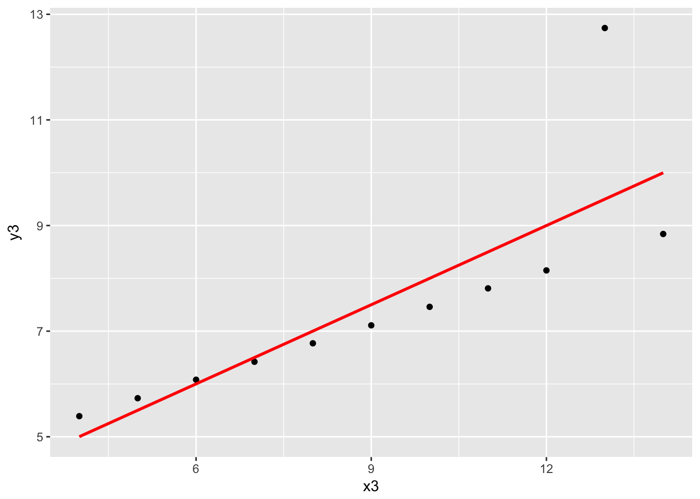
anscombe %>%
ggplot(aes(x=x4, y=y4)) +
geom_point() +
stat_smooth(method = "lm", col = "red", se = FALSE)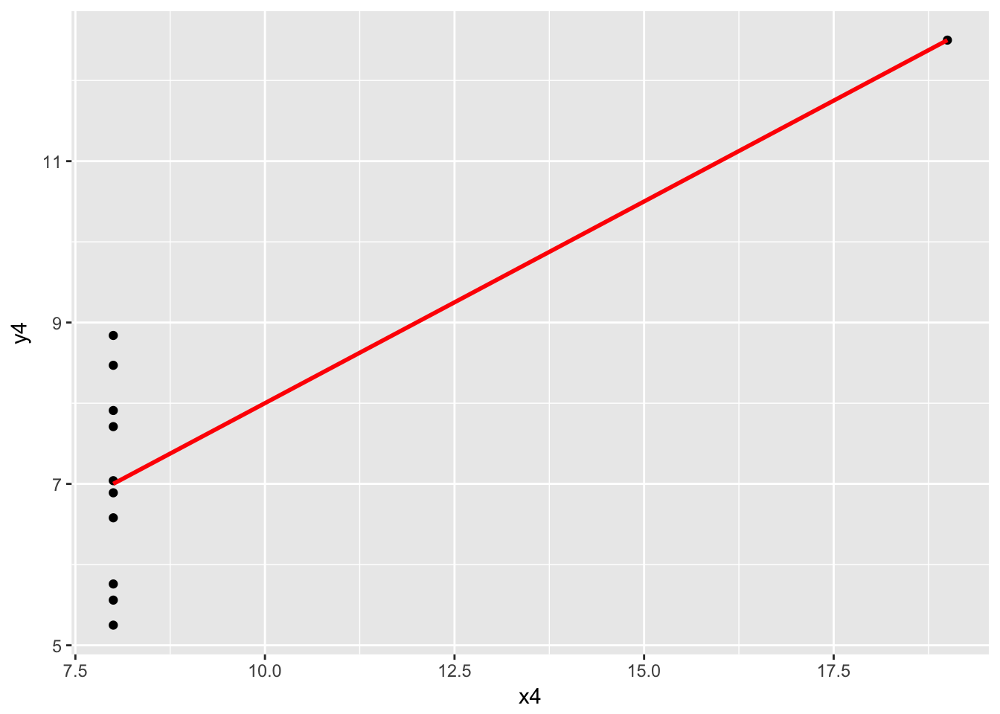